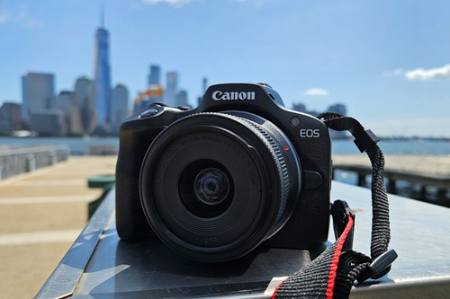
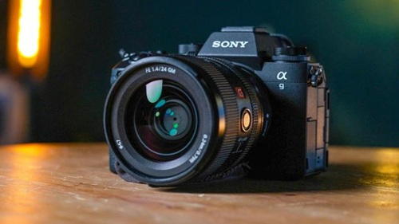
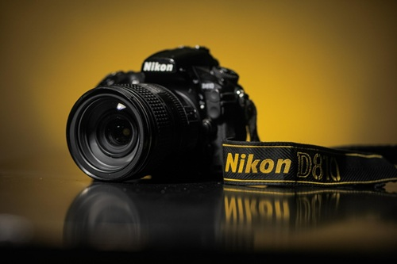
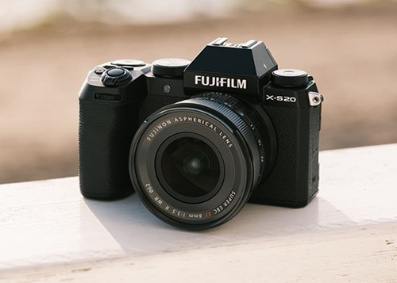

CANON is celebrated for its reliable DSLR systems and high-performance lenses. Known for its user-friendly interface and vibrant color science, Canon continues to be a favorite among both professionals and enthusiasts.


SONY leads the mirrorless revolution with its cutting-edge technology and compact, powerful cameras. Its Alpha series is particularly praised for exceptional autofocus, dynamic range, and video capabilities, making it a top choice for hybrid shooters.
NIKON boasts a rich heritage in optics and engineering excellence. Famed for its robust DSLRs and more recently, its Z-series mirrorless cameras, Nikon delivers exceptional image clarity and ergonomics tailored for serious photographers.


FUJIFILM blends classic design with modern performance. Best known for its retro-inspired mirrorless cameras and distinctive color profiles, Fujifilm is the go-to brand for creatives seeking style, portability, and artistic image rendering.